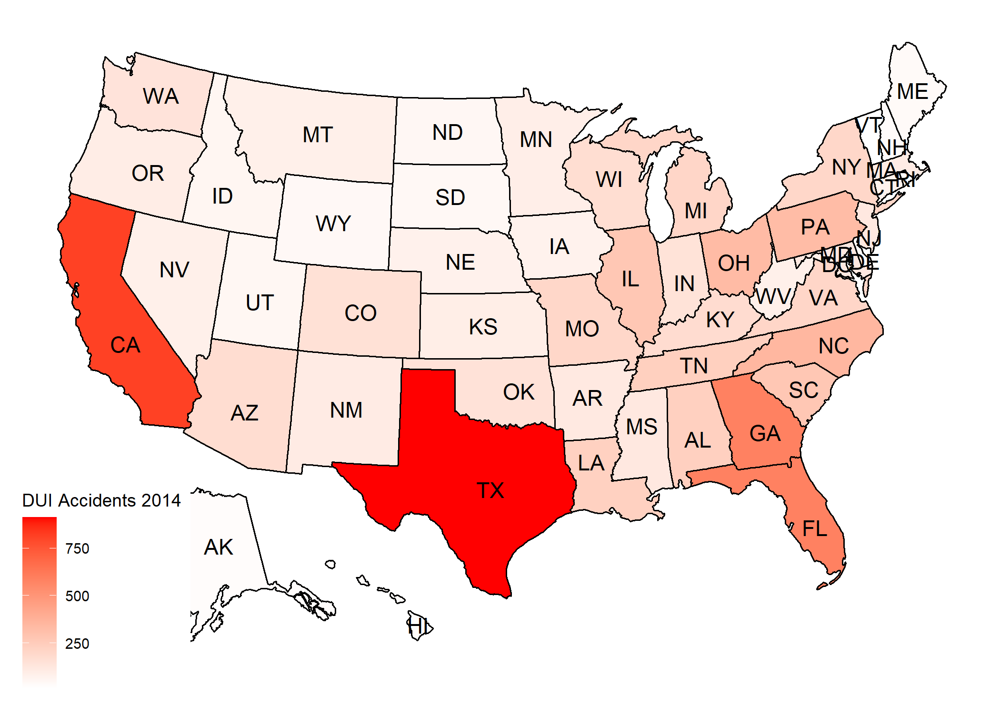
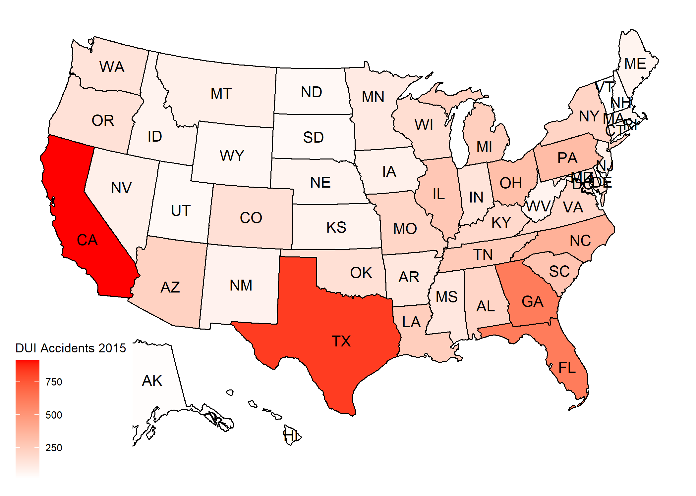
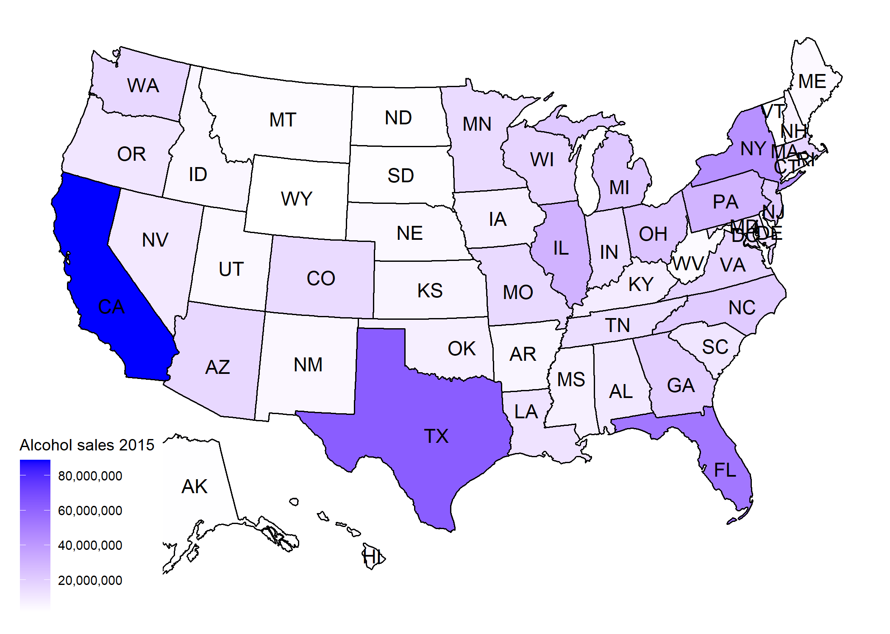
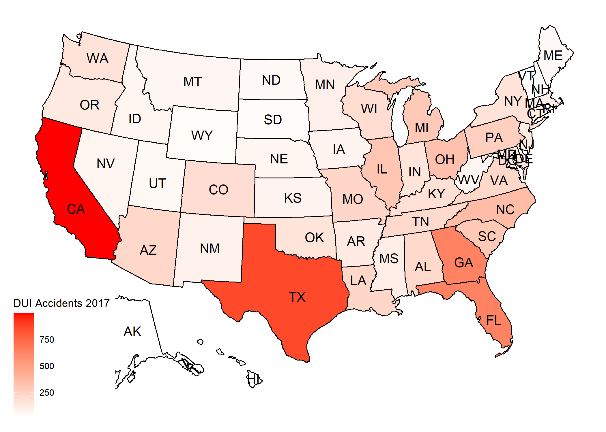

Liquor Sales Vs DUI Accident Reports - Data Analytics
Introduction
This is a data analytics project written in R language, the goal of this project is to gather Liquor Sales data and the DUI(Driving under Infuence) Accidents data, and try to
find a correlation between the two, do the states which have higher amount of alcohol sales have a higher rate of DUI reports? or are the two completely unrelated?. We can achieve
by understanding the data we can find. The requirements for this project would be to find a dataset which gives us both sales data as well as the DUI reports data. But, unfortunately
we are not that lucky, so let start searching the internet to find relevant info so that we can create such a dataset.
let choose a timeline, 2014 - 2018, its the perfect timeline because the millenials would have turned 18 or above.
Firstly, lets try to gather the liquor sales data, we need to find a dataset that gives us the liquor consumption data.
ICPSR - has an open dataset available which provides a per capita alcohol consumption state wise, which is not 100% what we want, but its a step forward.
Now we have per capita gallon based data, now we need to find the state wise population for the respective year so that we can find the total gallons consumed by a state in a year.
For this lets visit the census website which gives us this info
After computation we will have the total alcohol consumed by a state in a year.
Finally, we need to gather the DUI accident reports.
The NHTSA has datasets for accidents reported for each year.
Great, we now have all the data we need to get started.
Result after running data analysis
Year - 2014

Year - 2015
 Year - 2016


Year - 2017

Year - 2018


Conclusion
As seen from the maps above we can clearly infer that there is a relationship between the liquor sales and the accident reports, higher the sales in the state more accidents have been reported
Future Implementation
- Include the average age of the population state in the dataset and try to make a relationship between age and the DUI reports
- That way we can also see if the states with youger population has more reports
- Also, we can find the timeline of the sales in year and see if the accidents peak during a particular season, like public holidays, festivals etc..
References
- Accident Reports: https://www.nhtsa.gov/file-downloads?p=nhtsa/downloads/FARS/
- Alcohol Consumption: https://www.openicpsr.org/openicpsr/project/105583/version/V5/view?path=/openicpsr/105583/fcr:versions/V5/apparent_per_capita_alcohol_consumption_1977_2018.csv&type=file
- Census Data: https://www.census.gov/data/datasets/time-series/demo/popest/2010s-state-total.html#par_textimage_1873399417